維運工作和每個專案，
一個畫面看完。
IPMS 把部門的連結入口、每天的維運待辦、跨好幾個月的專案放在同一套系統。專案和維運分開管理，但落後、卡住、互相搶時段的地方，一打開就看得到。
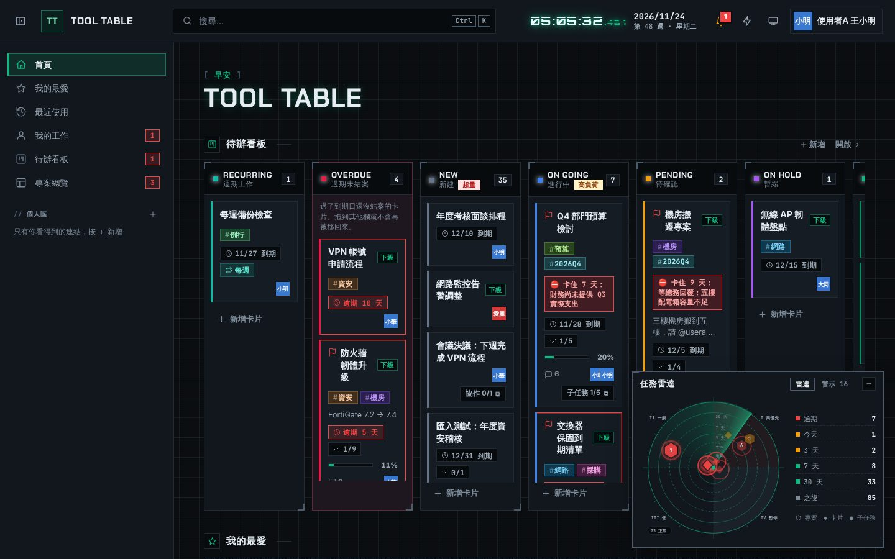
給同時扛維運和專案的部門用的
維運的待辦每天都有，專案一跑好幾個月，兩種工作落在同一批人身上。IPMS 的每個設計，都在回答同一個問題：主管和成員打開畫面時，能不能馬上看到「現在該處理什麼」。
一個畫面看完
連結入口、維運待辦、專案進度放在同一套系統，不用在三四個工具之間切換、對資料。
只畫要處理的
雷達、警示清單、戰情室只突顯逾期、卡住、衝突、超載；正常的合成一個數字，畫面不會被淹沒。
分開管理，但不漏看
專案和維運分開檢視，專案的警示卻永遠留在看板上方；同一套「問題」定義，雷達、報表、通知講的是同一件事。
資料留在公司裡
自架在內網，字型、Swagger、圖示都隨程式附帶，不連外部網站也能運作；AD／Entra ID 只讀取，從不寫回。
簡單到自己維護得動
Python＋SQLite，前端原生 JavaScript，沒有框架、沒有建置步驟；安裝、升級、健檢、備份都是同一支腳本。
權限以伺服器為準
每一個 API、每一次同步都由伺服器檢查權限；看不到的卡片連搜尋都找不到，歷史案件誰都改不了。
分開管理，不用切來切去找問題
卡片分「一般（維運）」與「專案」。看板上方用「全部／一般／專案」切換顯示，但專案的警示永遠留在摘要列：幾個進行中、幾個落後、本週有哪些里程碑。
- 專案卡顯示完成度、相對基準線落後幾天、下個里程碑與問題數，點一下開啟專案頁
- 專案期間的採購單、停機申請這類一般卡，可以歸屬到專案，一起出現在專案的甘特圖
- 我的工作：所有專案與一般卡裡指派給我的項目，依逾期、今天、3 天內、本週分組
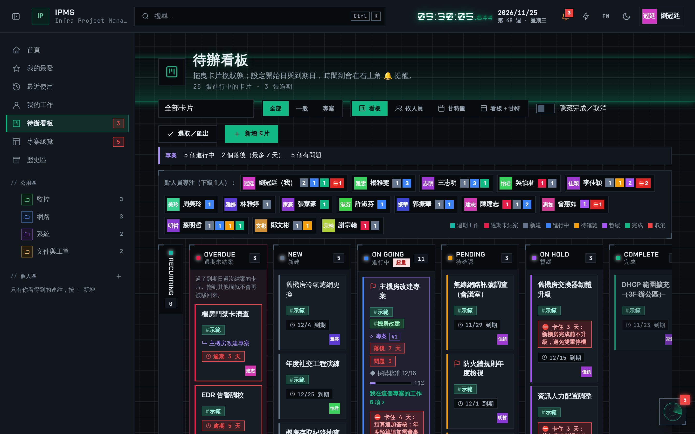
待辦看板 · 專案摘要列：3 個進行中、3 個有問題、本週里程碑 採購核准 11/27
五個專案、上百項工作，雷達上只剩要處理的幾個點
每個頁面右下角都有雷達。越靠近中心越緊急；正常的項目合成一個「N 正常」，畫面不會被光點塞滿。每個專案是一個六角形，點進去用扇區看各個階段。

全部：專案是六角形
位置看下個里程碑多近，顏色看健康度，數字是有問題的項目數。

專案雷達：扇區是階段
右邊列出每個階段的問題數，點光點直接在任務視窗展開到那一層。
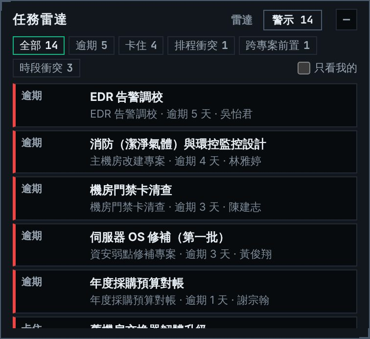
警示清單
依類型篩選、只看我的，人員超載也在這裡。
專案之間會互相卡住，所以要看得到彼此
同一批人同時跑好幾個專案，問題常常不在單一專案裡，而在專案之間：同一週被排滿、同一個停電時段被兩個專案搶、前置工作在別的專案延誤了。

里程碑、前置任務、基準線
看板可以切成甘特圖，或上面看板、下面甘特。開「與看板連動」時跟著看板的篩選；關掉就是獨立的甘特圖。
- 拖曳長條改日期、拖兩端改開始或到期；有後續工作時會詢問是否一起順延
- 基準線：存下原定日期，之後每一項都看得到延誤或提前幾天
- 有子任務的項目，日期自動等於底下的範圍；比前置任務早開始會標成排程衝突

一張卡片就是一個摘要任務，往下不限層數
看板分 週期工作／過期未結案／New／On going／Pending／On hold／Complete／Canceled，拖曳換狀態。卡片底下可以一路展開子任務，每一層都有負責人、日期、工時、留言與附件，狀態自動往上彙總。
任務視窗：由左至右一層一層展開
- 主卡 L1，往下 L2、L3、L4…不限層數；點一個子任務就在右邊展開，名稱、狀態、負責人、日期、預估工時直接改
- 每一層都能計時（▶／■，停止時問「做了什麼」）或手動記工時，也都能留言與回覆
- 子任務負責人管得到自己整個分支：新增、指派、記工時、刪除下層
- 主卡顯示完成百分比：已完成的子任務＋已勾完成的協作人
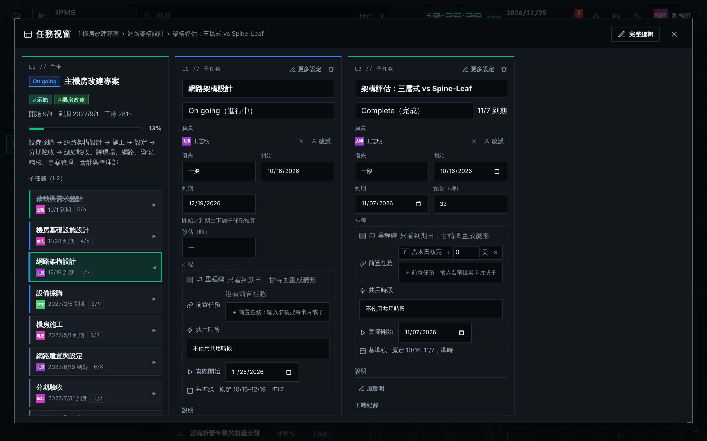
週期工作
每天、每個工作日、每週幾、每月、每年，或每 N 天／週。到期時問你是否結案並排下一次，整棵子任務樹與附件一起複製。
過期未結案
過了到期日還沒結案，自動移到「過期未結案」欄，每天早上提醒，直到結案或延後。
專注模式與上下級
看板上方列出每個人與他的工作量；點一個人只看他的卡片。上級看得到所有下級（可多層，從 AD 的 manager 帶入）。
卡住標記
⛔ 寫下卡在哪裡、在等誰，自動通知卡片的人與主責人的上級；卡片紅框顯示卡了幾天。
@ 協作與留言串
說明或留言裡 @ 同事（自動提示 AD 裡的人），被 @ 的人看得到卡片並收到通知；回覆會通知整串的人。
附件
圖片、PDF、Word、Excel、PowerPoint、文字檔，貼上或拖曳就上傳；每個檔案都檢查內容，只有看得到卡片的人能開。
自訂標籤
#客戶A、#資安、#2026Q4；同名同色，點一下就篩選，搜尋與 Excel 報告都看得懂。
工作量門檻
每欄卡片超過門檻時標「高負荷」「超量」；人員負載以預估工時計，超過每週上限就算超載。
提醒與桌面通知
到期前 15 分鐘到 1 週提醒；逾期、今天到期、該開始了會醒目標示，允許的話跳出桌面通知。
即時更新
別人改了卡片，畫面馬上刷新（長輪詢），不用重新整理。
搜尋
Ctrl＋K 同時搜尋連結與卡片：標題、說明、留言、人員、#標籤，只找得到有權限看的。
依人員版面
一人一列、欄位是狀態，直接拖曳改狀態，按「新增」建立指派給他的卡片。
結案的留下來，但不能再改
主卡完成或取消超過 72 小時（後台可調，1 小時～1 年），就從看板、專案總覽、雷達移到側欄的「歷史區」，看板只留還在進行的工作。
- 分「維運」「專案」兩頁，可搜尋、依狀態與結案年份篩選、匯出 Excel
- 卡片、子任務、留言、工時、附件都保留；結案的專案照樣有甘特圖、專案看板與清單
- 任何人都不能修改或留言：伺服器、Excel 匯入、單機版同步上來的修改一律拒絕
- 一般搜尋也找得到歷史案件，排在進行中的工作後面
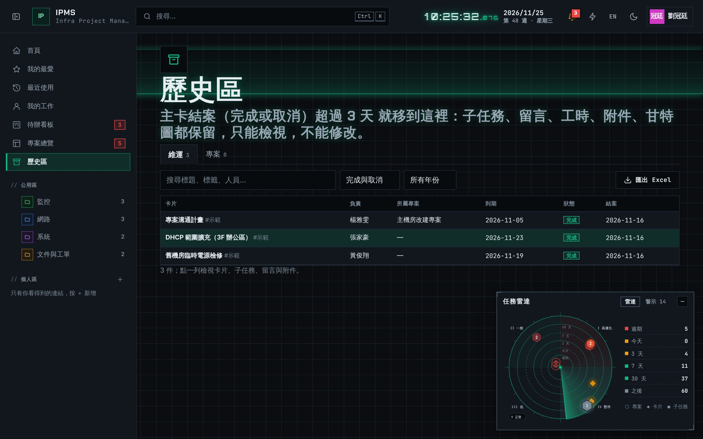
給長官的報告、給 MS Project 的排程，一鍵產生
看板、專案頁、甘特圖都能匯出，選格式就好：Excel 工作進度報告、加上甘特圖分頁的 Excel，或 Microsoft Project 直接開得起來的 XML。以下是示範專案實際匯出的檔案。
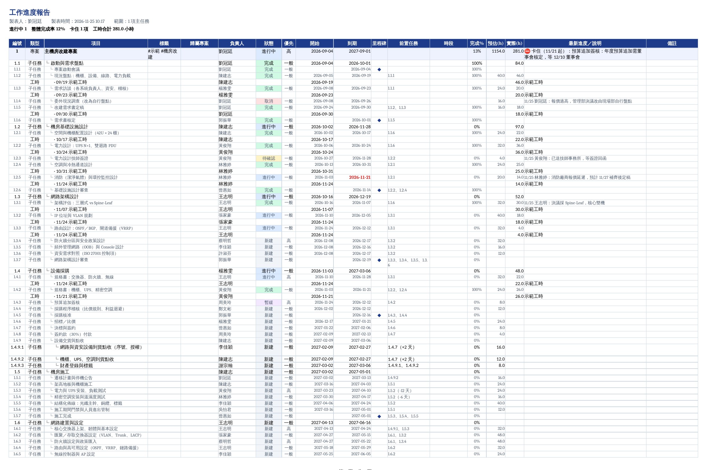
Excel 工作進度報告
一張樹狀表，編號 1、1.1、1.1.1… 可以逐層折疊；狀態上色，逾期標紅，附工時紀錄與最新留言。另有「專案總覽」「人員負載」「問題清單」分頁，頁首頁尾與列印範圍都設好了，直接列印或轉 PDF 就能交出去。
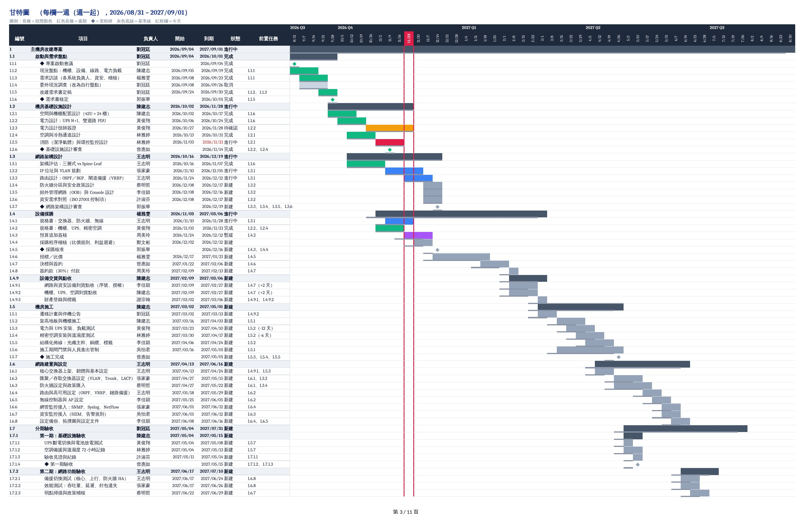
報告＋甘特圖（Excel）
多一個「甘特圖」分頁：依狀態上色的長條、◆ 里程碑、灰色基準線、紅框標出今天，刻度依專案長度自動選日、週或月。A3 橫向列印，每頁重複表頭與項目欄。
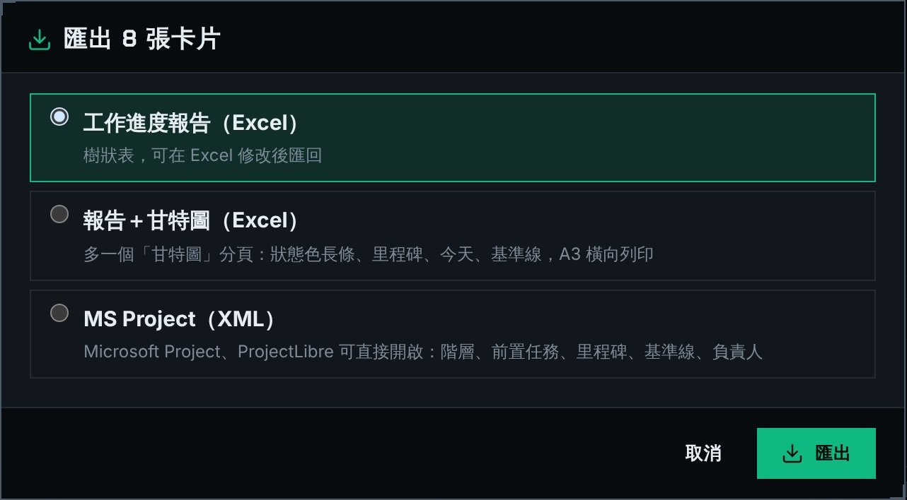
MS Project、依人員匯出、改完再匯回
- MS Project（XML）：Microsoft Project、ProjectLibre 直接開啟，保留階層、前置任務（含間隔天數）、里程碑、基準線、負責人與完成度
- 依人員匯出：選人或整個部門、狀態、一般或專案，只匯出他們參與的部分，週會、考核直接用
- 改完匯回：在 Excel 修改狀態、日期、負責人或新增項目後匯入，先預覽每一列會怎麼變再套用
- 歷史區的案件也能匯出，結案的專案照樣產生完整報告
不用登入，掛在牆上的進度看板
網址 /dashboard，給主管會議、辦公室大螢幕用。只顯示數量與進度，不顯示卡片內容；每 15 秒自動更新。
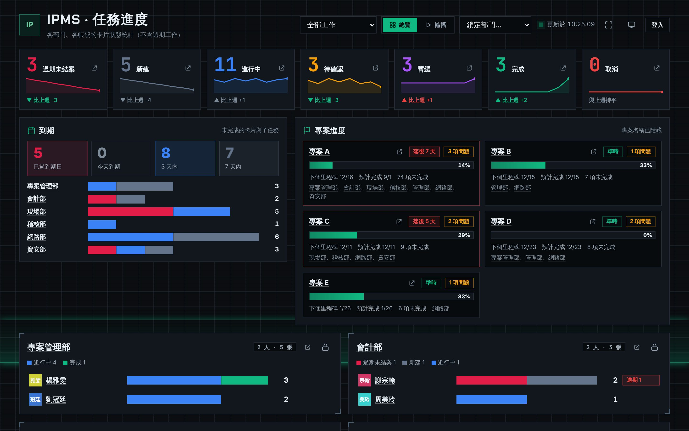
總覽（老闆模式）
各狀態的數量與近 8 週趨勢、到期分布、專案進度（落後天數、問題數、下個里程碑，名稱可匿名）、各部門每個人的狀態色條、人員負載熱圖與系統狀態燈號。?rotate=1 輪播總覽與各部門。
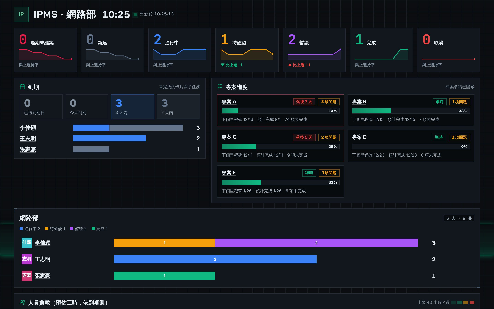
鎖定部門＋壁掛模式（部門主管）
?dept=網路部 只看一個部門，&tv=1 字體放大、隱藏按鈕與游標，適合電視牆。
- 可切換全部工作／一般維運／單一專案
- 狀態、部門、人員、專案都能點選篩選，↗ 直接在看板開啟同一批卡片（需登入）
- 專案名稱可設為顯示、匿名（專案 A、B…）或隱藏；人員負載、系統燈號可在後台開關
- 系統燈號只顯示正常／注意／異常，不洩漏主機資訊
該做的事會自己找上門
🔔 列出被指派、被 @、新留言與到期提醒；我的工作把所有來源的待辦排好；重要的事也能送到 Microsoft Teams。

我的工作
跨所有專案與一般卡，指派給我的項目依逾期、今天、3 天內、本週、之後排好。每一項標出來自哪個專案、在第幾層。
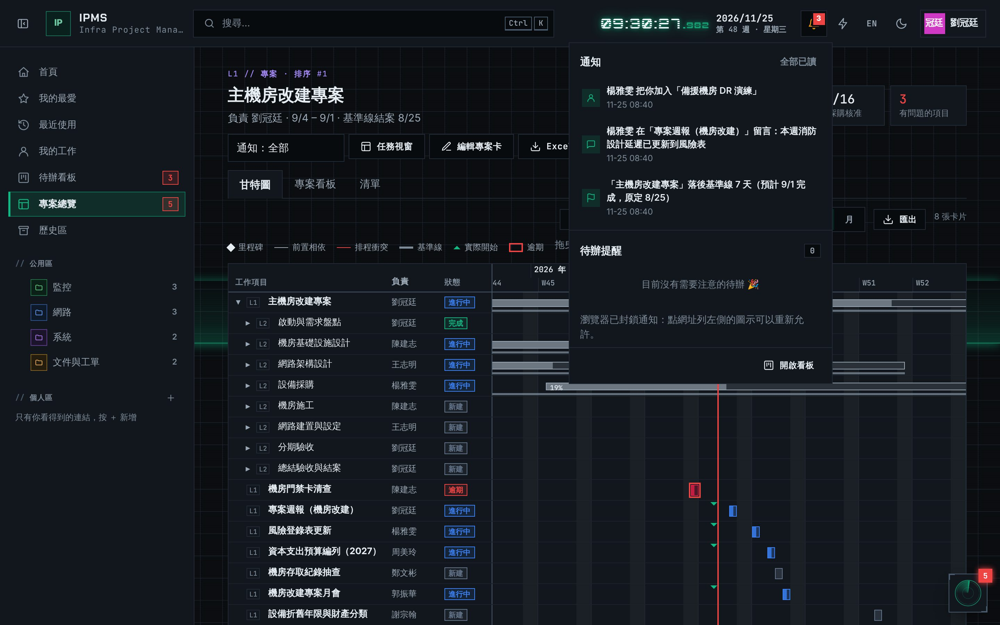
專案通知
每個專案自己選：全部、只跟我有關、每日摘要或關閉。每天送出落後基準線、跨專案前置延誤、時段衝突、3 天內到期的里程碑；同一件事只通知一次。
Microsoft Teams 通知
在 Teams 頻道建立「收到 webhook 要求時張貼到頻道」工作流程，把網址貼到後台即可，不需要 Entra 應用程式。每個頻道選要收的：
- 卡片與專案的變更：一分鐘內的修改合成一則「欄位：原本 → 現在」與修改的人（單機版同步上來的也算）
- 每日專案事件：落後基準線、跨專案前置延誤、時段衝突、即將到期的里程碑
- 系統與硬體告警：磁碟、記憶體、CPU、溫度、RAID、重開機、備份、HTTPS 憑證、nginx、AD／Entra 連線、資料庫；異常、持續異常與恢復各通知一次
- 定時狀態報告：每天指定時間送出全部檢查結果
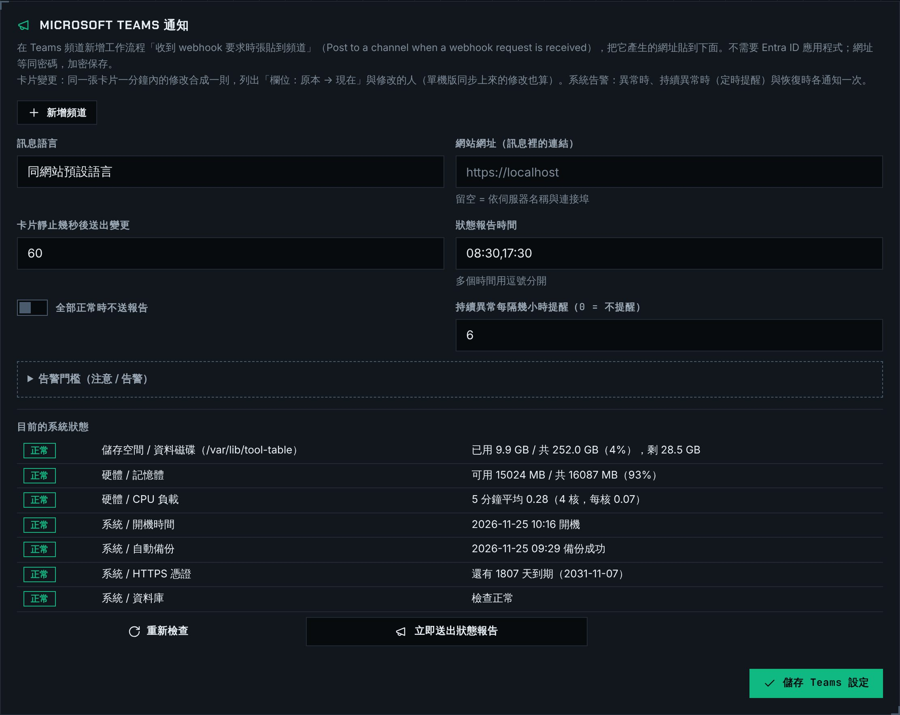
部門的連結，全部在後台整理
系統、設備、文件、工單的網址放進資料夾，首頁版面、配色、圖示都在後台調整，不用改程式。
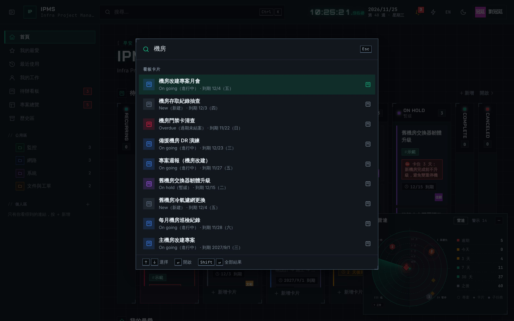
搜尋面板（Ctrl＋K）
比對名稱、說明、網址、路徑與圖示，也搜尋看板卡片的標題、說明、留言與人員；鍵盤上下選、Enter 開啟。
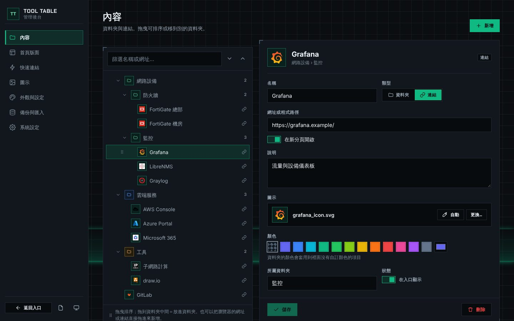
管理後台
樹狀編輯，拖曳排序、拖進資料夾；名稱、網址、說明、圖示、顏色、開新分頁、啟用與否、可見範圍（所有人或指定部門／人員）。
拖曳網址就新增
把網址列、網頁連結或書籤拖進頁面，自動帶入標題並抓網站圖示（內網自簽憑證的網站也行）。
公用區與個人區
公用區由管理員維護；每個人另有只有自己看得到的個人區，跟著帳號走。
首頁由區塊組成
公告、快速連結、我的最愛、最近使用、所有分類，或把任一資料夾攤在首頁；順序與大小都能調。
個人設定跟著帳號
我的最愛、最近使用、主題、側欄、檢視選擇、語言存在伺服器，換電腦、換瀏覽器都一樣。
快速連結與快速篩選
可分群組的捷徑按鈕（例如各區上網驗證）；依圖示列出同類設備的連結。
軍規戰術外觀
深色黑曜軍灰／淺色北約粉筆白／跟隨系統；戰術時鐘、掃描線，省資源模式一鍵關閉動畫。
繁體中文／英文
頁首「中／EN」切換並記在帳號；錯誤訊息、通知、Excel 報告、API 文件都跟著語言。
手機與安裝成 App
手機、平板、桌機都能用；Chrome／Edge 可安裝成獨立視窗的應用程式，手機可加到主畫面。
本機程式（單機版）
把捷徑或 exe 拖進來，點卡片就在這台電腦上啟動；只對本機開放，其他網站無法呼叫。
AD 帳號登入，誰看得到什麼由伺服器決定
伺服器版整站需要登入。AD（LDAP／LDAPS）與 Microsoft Entra ID 可以同時使用，混合式環境同一個人就是同一個帳號；姓名、部門、上級只讀取，從不寫回。
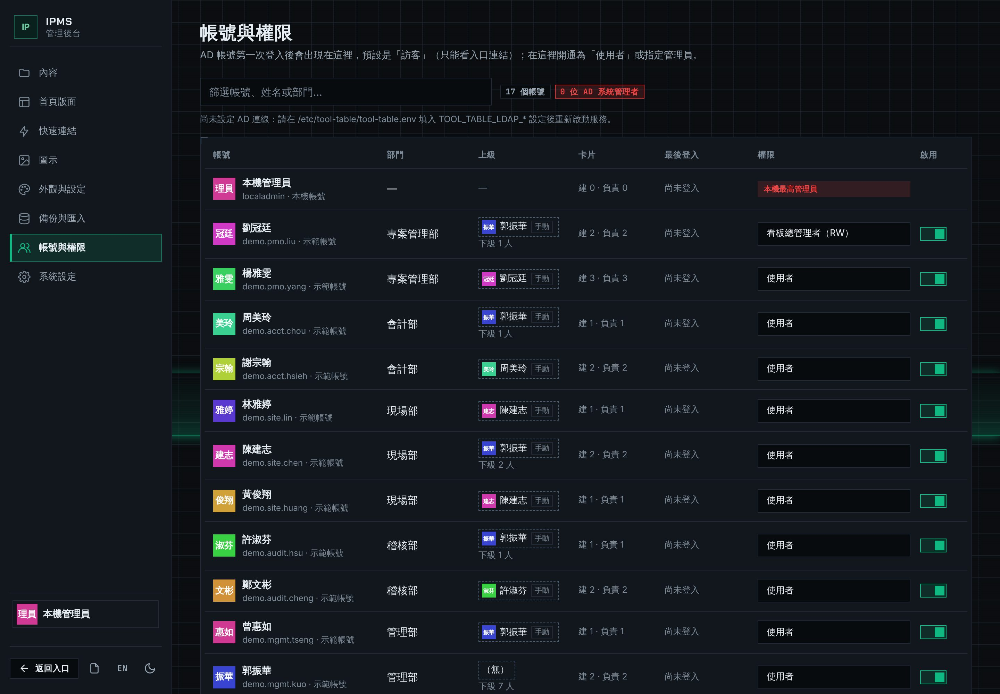
| 權限 | 看得到 | 可以改 |
|---|---|---|
| 看板總管理者 RW／RO | 所有卡片 | RW 全部；RO 只有自己的，其他可留言 |
| 部門看板管理者 RW／RO | 管理部門＋自己的 | RW 管理部門；RO 只有自己的 |
| 使用者 | 自己建立、被指派、被 @ 的 | 同左（不能指派） |
| 訪客（新帳號預設） | 只有公用連結 | 無，提示聯絡系統管理員開通 |
| ＋系統管理（附加） | 後台設定與查詢；看板依原本的等級 | 看板不增加權限 |
- 上級看得到所有下級的卡片（可多層）；權限可設可編輯或只看＋留言
- 登入頁自動帶入 AD 網域後綴；Entra ID 用 OIDC＋PKCE，支援多重要素驗證，可限定群組
- 本機管理員只在緊急時用；「系統管理」是附加身分，使用者以上都可賦予；系統要求至少保留一位 AD 帳號有系統管理
只走 HTTPS
對外只有 443，80 自動轉 HTTPS；應用程式只綁 127.0.0.1，由 nginx 反向代理。
敏感設定加密
AD 服務帳號密碼、Entra 密鑰、Teams 網址以 AES-256-GCM 加密保存，金鑰只有服務帳號讀得到。
防偽造請求
所有修改資料的呼叫都要帶專屬標頭，其他網站無法替你送出；登入有頻率限制與鎖定。
附件不只看副檔名
上傳時檢查檔案內容，文件以 nosniff 與沙箱 CSP 提供；只有看得到卡片的人能開。
不在公司網路裡，照樣能用
Windows 連線版仍在開發中，功能與安裝方式可能還會調整，正式使用建議以伺服器版為主。
伺服器版給整個部門共用，用 AD 帳號登入。Windows 單機版在外面也能新增、修改、計時、附檔，連上伺服器後自動同步回去，兩邊功能完全相同。
- 逐欄位合併：兩邊改了同一張卡的不同欄位，兩邊的修改都保留；改到同一欄位時以較新的為準，並列入衝突紀錄
- 版本跟著伺服器：連線後自動確認版本，不一樣就從伺服器下載同一版、幾秒內自動重新啟動，資料不受影響
- 像一般程式一樣只有一個視窗，沒有黑色主控台；關掉視窗程式就結束
- 以 python.org 官方簽章的 pythonw.exe 執行，套件裡沒有自製的執行檔，不會被公司防毒誤判
- 只讀取 AD 的帳號與上級資料，從不寫回 AD
裝好之後，不用再登入伺服器
AD 登入（含測試）、登入安全、HTTPS 憑證、連線埠、備份與還原、Teams 通知，全部在網頁後台完成。
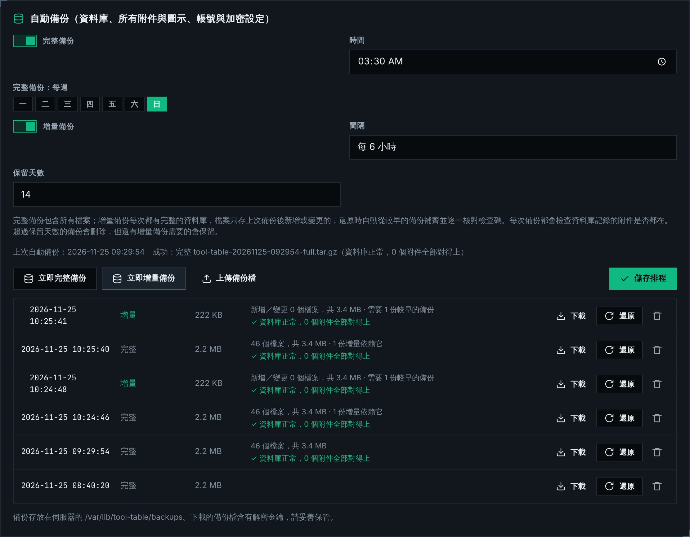
完整＋增量備份，資料一個都不少
- 完整備份（預設每週）：資料庫、加密金鑰、所有圖示與附件；增量備份（預設每 6 小時）每次都有完整資料庫，檔案只存新增或變更的
- 每份備份記錄每個檔案的 SHA-256，並檢查資料庫記錄的附件都對得上檔案
- 還原時自動從較早的備份補齊並逐一核對，還原前先備份目前的狀態；下載增量備份會合成完整檔案
- 伺服器另有每日系統備份（含 HTTPS 憑證與 nginx 設定），存在資料目錄以外
系統與硬體監控
磁碟、記憶體、CPU、溫度、RAID、開機、備份、憑證、nginx、AD 連線、資料庫，門檻可調，異常送 Teams。
一支腳本管到底
tool-table.sh：安裝、升級、健檢（doctor）、備份、還原、重設本機管理員、換憑證、解除安裝。
示範資料
測試機一鍵建立 7 個部門、16 位示範人員、一年期的機房改建專案與日常卡片，一鍵移除。
整站匯出／匯入
設定、連結、快速連結與卡片匯出成一個 JSON，搬家或當範本分享。
一台 Linux 主機就夠，沒有外部相依
瀏覽器只連 nginx；應用程式與資料都在同一台主機。AD、Entra ID、Teams 都是選用的外部連線。
後端
Python 3.10+、FastAPI、aiosqlite；openpyxl 產生 Excel，MS Project XML 直接產生；ldap3、cryptography。
前端
原生 JavaScript 與 CSS，沒有框架、沒有建置步驟；字型、Swagger UI 隨程式附帶，離線可用。
同步引擎
每列全域 id、逐欄位修改時間（毫秒、校正時鐘差）、刪除記號；兩邊改同一欄位時兩個版本都保留。
部署
systemd 服務、nginx 反向代理、自簽或正式憑證；Debian 12/13、Ubuntu 22.04/24.04。
Windows 用戶端
python.org 官方簽章的內嵌 Python＋Inno Setup，沒有自製 exe；GitHub Actions 每次自動打包並實際啟動測試。
API
所有功能都有 API，依功能分組、中文說明，Swagger UI 可以直接試；權限與網頁相同。
API 文件
開 https://<主機>/docs（管理後台左下角也有按鈕）。「Try it out」以你目前登入的身分執行；原始 OpenAPI 在 /openapi.json，可匯入 Postman。
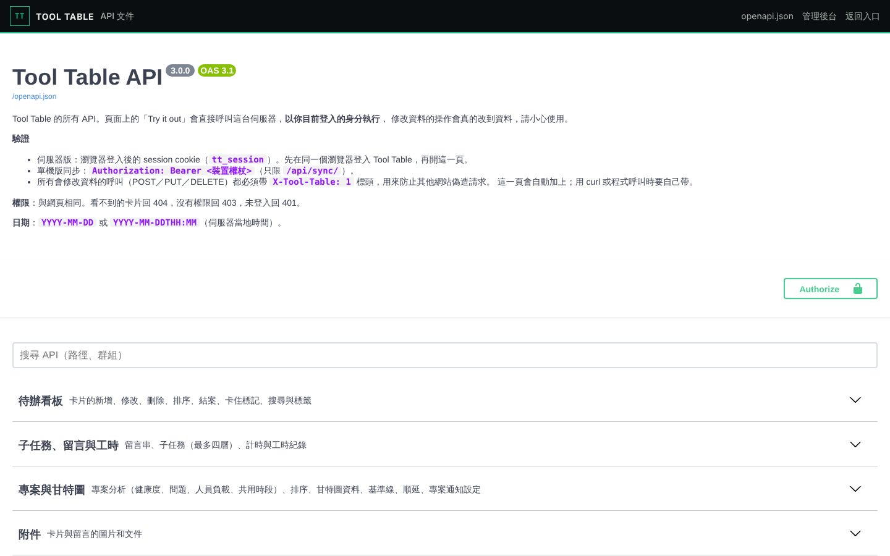
兩種裝法，資料可以互通
伺服器版
全新的 Debian 12/13 或 Ubuntu 22.04/24.04，一行指令裝好 nginx、HTTPS、systemd 服務與每日備份。
curl -fsSL https://raw.githubusercontent.com/nox913106/net-tool-table/main/scripts/bootstrap.sh | sudo bash
裝好後用瀏覽器開 https://<主機>，在後台設定 AD。詳細步驟見 INSTALL.md。
Windows 連線版開發中
開發中的預覽版：可以試用，功能與安裝方式之後可能調整（規劃改由伺服器直接提供下載）。
不需要系統管理員權限，也不需要安裝 Python。裝好一次後，連線時會自動更新成伺服器的版本，資料會保留。
下載預覽版 IPMS-Setup.exe免安裝版：下載 IPMS-windows-x64.zip，解壓縮後點兩下 IPMS.cmd。要連伺服器時，按頁首的同步標記輸入網址與 AD 帳號（帳號只要打名稱，網域後綴會自動帶入）。
系統需求
伺服器：全新的 Debian 12/13 或 Ubuntu 22.04/24.04，能連 PyPI 安裝套件。用戶端：Windows 10/11 x64，不需系統管理員權限。
連接埠
對外只開 443（HTTPS）與 80（轉 HTTPS）；應用程式只聽本機。
本機開發
Python 3.10+，./run.sh（Windows 用 run.bat），開在 http://127.0.0.1:8080，後台在 /admin。
升級與健檢
sudo bash /opt/tool-table/scripts/tool-table.sh upgrade
sudo bash /opt/tool-table/scripts/tool-table.sh doctor
升級會先備份、更新套件與設定、重啟後確認有回應。
備份與還原
sudo bash /opt/tool-table/scripts/tool-table.sh backup
sudo bash /opt/tool-table/scripts/tool-table.sh restore <備份檔>
平常在後台的「備份與匯入」就能完成；完整步驟見 INSTALL.md。